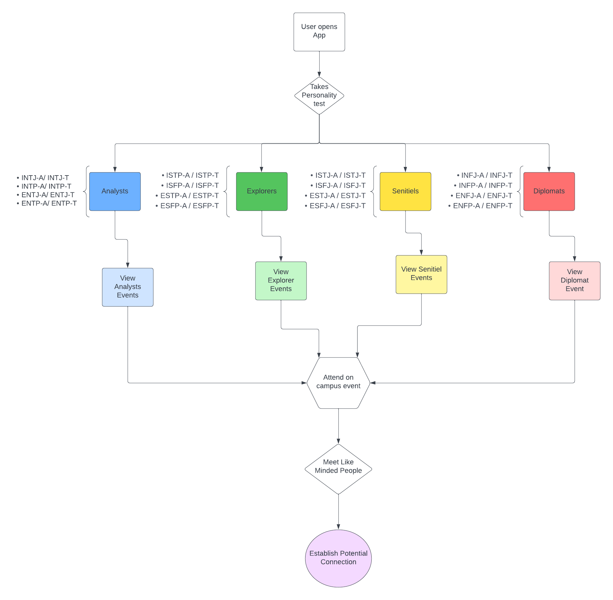

A concept app matching students to campus events by personality type, taken from low-fi flow through Figma prototype and usability testing.
The Drexel Personality System is a concept for helping students meet people similar to them. Students download an app showing events around campus, but the events are presented differently for each user: on first launch they complete a personality quiz, and the results determine which events they see.
Once the quiz is complete, users are placed on one of four teams — Analysts, Explorers, Sentinels, and Diplomats — named after the groupings the Professional Leadership Institute uses to describe the 16 personality types.
Each team has a color that users wear to in-person events: Analysts blue, Explorers green, Sentinels yellow, Diplomats red. The colors signal like-minded people at events, and at open events they show others what type of person you are.
The end goal is for students to find their team through the app and attend on-campus events where they can make a real connection. Based on my research, a common factor in developing meaningful connections is physical interaction and shared activity, so the system is built to bring similar people together and get them doing something.
I performed usability testing on the high-fidelity prototype to find weak points in the design. The protocol evaluated user experience, user interface, and functionality through both asynchronous and synchronous testing, with ten participants each.
For asynchronous testing I used UsabilityHub (now Lyssna) to assess functionality and navigation, which surfaced issues with accessibility throughout the app. For synchronous testing I wrote questions focused on engaging with specific features, which gave feedback the standardized task-completion format would not have caught.
Raw results from the ten asynchronous Lyssna sessions on the high-fidelity prototype. Participants were anonymous; demographic fields are omitted here.
| Participant | Task 1 | Task 2 | Task 3 | Task 4 |
|---|---|---|---|---|
| P1Mobile · Advanced | ✓ CompletedEase 5/5 · 26s | ✓ CompletedEase — · 33s | ✓ CompletedEase 5/5 · 45s | ✓ CompletedEase 5/5 · 22s |
| P2Desktop · Advanced | ✓ CompletedEase 5/5 · 34s | ✓ CompletedEase 5/5 · 18s | ✓ CompletedEase 5/5 · 32s | ✓ CompletedEase 4/5 · 53s |
| P3Mobile · Advanced | ✓ CompletedEase 5/5 · 10s | ✓ CompletedEase 3/5 · 42s | ✓ CompletedEase 4/5 · 24s | ✓ CompletedEase 5/5 · 16s |
| P4Mobile · Advanced | ✓ CompletedEase 5/5 · 10s | ✗ Gave upEase 5/5 · 95s | ✓ CompletedEase 5/5 · 11s | ✗ Gave upEase 5/5 · 13s |
| P5Mobile · Intermediate | ✓ CompletedEase 4/5 · 22s | ✓ CompletedEase 4/5 · 85s | ✓ CompletedEase 5/5 · 19s | ✓ CompletedEase 2/5 · 56s |
| P6Desktop · Advanced | ✓ CompletedEase 3/5 · 41s | ✗ Gave upEase 3/5 · 66s | ✓ CompletedEase 2/5 · 8s | ✗ Gave upEase 1/5 · 51s |
| P7Mobile · Intermediate | ✓ CompletedEase 4/5 · 11s | ✓ CompletedEase 5/5 · 44s | ✓ CompletedEase 5/5 · 18s | ✓ CompletedEase 4/5 · 9s |
| P8Desktop · Advanced | ✓ CompletedEase 5/5 · 17s | ✓ CompletedEase 4/5 · 12s | ✓ CompletedEase 5/5 · 42s | ✓ CompletedEase 4/5 · 12s |
| P9Desktop · Advanced | ✓ CompletedEase 5/5 · 22s | ✓ CompletedEase 4/5 · 20s | ✓ CompletedEase 4/5 · 45s | ✓ CompletedEase 5/5 · 21s |
| P10Desktop · Intermediate | ✓ CompletedEase 5/5 · 24s | ✗ Gave upEase 4/5 · 118s | ✓ CompletedEase 5/5 · 25s | ✗ Gave upEase 5/5 · 34s |
| All10 participants | 100% completedAvg ease 4.6/5 · 22s | 70% completedAvg ease 4.1/5 · 53s | 100% completedAvg ease 4.5/5 · 27s | 70% completedAvg ease 4.0/5 · 29s |
| Statement | Framing | Average | Agree (4–5) |
|---|---|---|---|
| I think that I would like to use this website frequently | Positive | 3.6 | 5/10 |
| I thought the system was easy to use | Positive | 4.2 | 7/10 |
| I think that I would need the support of a technical person to be able to use this system | Negative | 2.2 | 3/10 |
| I found the various functions in this system were well integrated | Positive | 4.3 | 9/10 |
| I thought there was too much inconsistency in this system | Negative | 2.1 | 3/10 |
| I would imagine that most people would learn to use this system very quickly | Positive | 4.0 | 8/10 |
| I found the system very cumbersome to use | Negative | 1.7 | 1/10 |
| I felt very confident using the system | Positive | 4.3 | 8/10 |
| I needed to learn a lot of things before I could get going with this system | Negative | 2.3 | 2/10 |
The post-test questionnaire taught me a lot about flow, learnability, and design: 70% of participants found the system easy to use and 90% found its functions well integrated. That told me the overall flow worked, so I focused on the people who struggled. The common complaints were bad clicks and readability. One task asked users to add an event, and when they did they got stuck with no way back to the home page — so I redesigned the create-event screen to navigate to the general events page after pressing add. For readability, I changed several fonts, colors, and italics.
